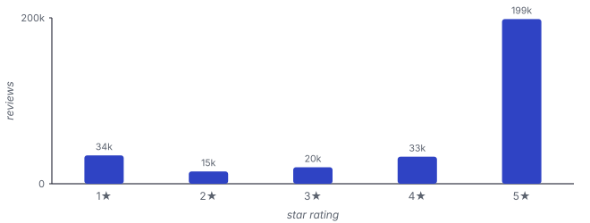
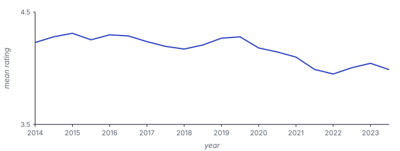
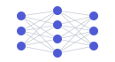

Amazon Reviews
Amazon Reviews
Review ratings, 2014–2023: covariate and concept drift, measured by balanced MSE.
Amazon Reviews is a large corpus of product reviews. We use a stratified sample of 300,000 reviews across seven categories from 2014 to 2023, predicting each review's 1 to 5 star rating from its text.
Both the writing style (covariate) and the relationship between language and rating (concept) drift over time. Error is summarised by balanced MSE, the mean squared error averaged across the five rating levels so that common ratings do not dominate, and the question is whether a model trained on early reviews still predicts later ones accurately.
e.g."This spray is really nice. It smells good and does the trick."
a number from 1 to 5
half-year slices


Amazon Reviews is evaluated with architectures: trained over frozen RoBERTa-base representations (four families at three sizes) and frozen pretrained encoders, each with a single linear head.

